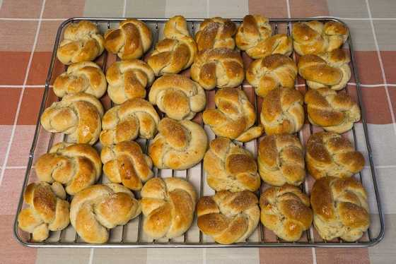

Wheat stalks / Quer / CC0 1.0
ABOUT
地元に戻って、パンを焼くことにした。
オーナーの佐々木さんは、学生時代に管理栄養士の勉強をし、食品関係の仕事を経験。「食べ物で人に喜んでもらえる仕事がしたい」と考え、地元の上富良野に戻ってパン屋を開いたと、パンのインタビュー記事で紹介されています。
- 小麦粉は北海道産100%(紹介記事より)
- パン生地は無添加にこだわり(紹介記事より)
- 自家製カスタードクリームには富良野藤井牧場の牛乳を使用(紹介記事より)
- 2019年8月ごろにオープンしたと紹介されています
店名の由来は、確認できていないため載せていません。

BREAD
紹介されているパン
営業時間・価格・全メニューは準備中です。下は紹介記事で名前が挙がっていたパンです(写真はイメージです)。
カスタードクリームパン
看板商品として紹介。藤井牧場の牛乳を使った自家製クリーム。
金時豆塩バターロール
甘い金時豆とバターの塩味の組み合わせ、と紹介されています。
塩パン
外はカリッと、中はもちもち、との声があります。
モーモースティック
シュガーバターのクリーム入りと紹介されています。
価格: 準備中 営業時間: 準備中





VOICE
口コミ(イメージ例)
以下は制作側が作成したイメージ例であり、実在のお客様の声ではありません。
イメージ例
朝ごはん用に買って帰りました。やわらかくて、トーストしなくても食べやすいパンでした。
イメージ例
クリームのやさしい甘さが印象的でした。小さな町のパン屋さんという雰囲気が好きです。
イメージ例
午後に行ったら品数が少なめでした。次は早めの時間に行ってみたいです。